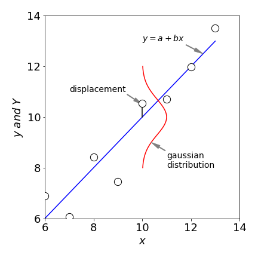
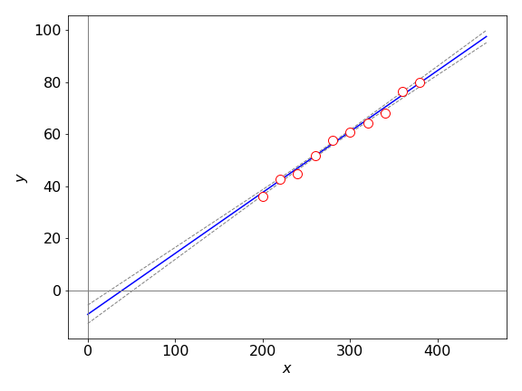
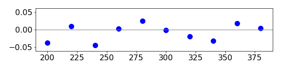
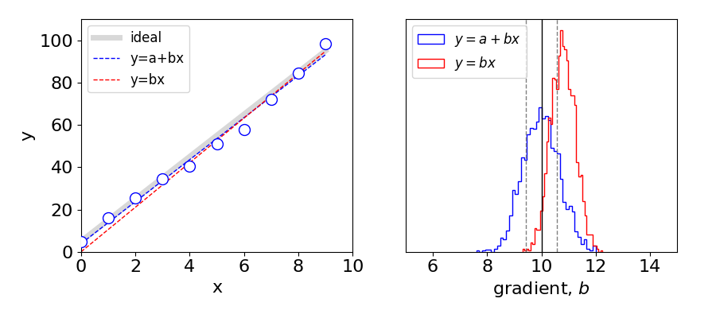

6 Modelling data. Least squares, chi squared, residuals, ANNOVA
Contents
6 Modelling data. Least squares, chi squared, residuals, ANNOVA#
# import all python add-ons etc that will be needed later on
%matplotlib inline
import numpy as np
import matplotlib.pyplot as plt
from sympy import *
from scipy.integrate import quad,odeint
from scipy.stats import t, norm, chi2, f
init_printing() # allows printing of SymPy results in typeset maths format
plt.rcParams.update({'font.size': 14}) # set font size for plots
6.1 Concept#
In many situations, the purpose of an investigation is to obtain an equation (regression model) that can be used to predict the value of one variable by knowledge of others. Probably the most useful and most applied method of doing this is the least squares method. The basic idea is shown in figure 7, where the square of the \(y\) displacement from the line to each data point, is minimized. The minimization is only along \(y\) because it is assumed that the \(x\) values are known exactly. By minimizing these displacements with an assumed model of the data, a straight line for example, the best fit to the data is obtained, and the calculation produces the slope and intercept of the best fitting line. Furthermore, the ‘goodness’ of fit can be made quantitative, allowing different theoretical models that might describe the data to be compared with one another. Different sets of data can also be compared. The least squares is a parametric method because a (parameterised) function is fitted to data, there are non-parametric methods, such as principal component analysis (section 13) that seek to understand the data without knowing the functional form.
Suppose that in a chemical reaction the product yield is proportional to the pressure. Using the limited number of measurements available, it would be appropriate to calculate a least squares fit to the data to predict the yield that is most likely to occur at any given pressure. This information could then be used to control the reaction in some form of feedback loop. Similarly, if in a reaction the concentration of a compound vs time is measured, this can then be analysed using a least squares method to obtain the rate constant. Taking this further, if the rate constants vs temperature are measured, then an Arrhenius plot can be made and, by a second least squares analysis, the activation energy obtained.
While the least squares method is extremely useful and universally used, there are some pitfalls to avoid. A straight line can be fitted to any set of data; it is only a matter of how well the line fits and whether this fit is acceptable. Several statistical tests can be used to check this. Fitting is not restricted to straight lines, and quadratic or higher polynomials can be used, as can exponentials or sine and cosines. The function used should always be based on the underlying science. Any set of data could fit equally well to several different functions and the more complicated the function, a polynomial or sum of several exponentials for example, the larger the number of variable parameters will be and the better the fit is going to be. Hence the quip, ‘with enough parameters you can fit the shape of an elephant’. However, the fit may describe the data but have no relationship at all to the underlying science, in which case nothing has been achieved because the parameters obtained have no meaning.

Figure 7. The displacements are assumed to be Gaussian distributed. The line is \(Y\), the experimental points, \(y_i\). The square of all the displacements is minimized.
Another pitfall is to make false correlation between observables. The reading age of children shows a very good linear relationship to their shoe size, but to suggest that a child with large shoes must be good at reading is clearly nonsense. The obvious correlation is that older children are generally better at reading than younger ones. A less obvious relationship is found in the rate of the rotational diffusion \(D\) of molecules in the same solvent. This can be measured by observing a molecule’s fluorescence through polarizers. A good linear correlation is found between D and the reciprocal of the molecular mass. This is, however, false. The true correlation is with molecular volume \(V\), which for a limited class of molecules, such as aromatics or dye molecules, has a similar proportionality to mass. The Stokes - Einstein equation \(D = k_BT/(6\eta V)\), where \(\eta\) is the viscosity, shows that molecular volume is the important quantity. The \(D\) vs reciprocal mass correlation can now easily be tested; an iodo-derivative has a far greater mass but not much greater volume than the protonated molecule. Remember that a strong observed correlation between the variables does not imply a causal relationship.
The final thing to look out for when using least squares is outliers. These are data points well away from the trend indicated by other points. It may be argued that these can be ignored as being due to faulty experimentation, but if this is not the case these points have to be dealt with and in Section 3.6 such a test was described. The least squares method is inherently very sensitive to these points, because the square of the deviation is used. It is often quite clear that the line does not fit the data and is pulled away from what one would expect to see as the fit; see figure 15. In this case, a more robust method such as least absolute deviation is required, Section 6.8, without removing data points.
6.2 The least squares calculation for a straight line#
Suppose that the straight line
is proposed to describe the data. In a least squares analysis, the test is to determine whether the experimental data y follows the equation
where \(\epsilon\) is a random error with a mean of zero and standard deviation of \(\sigma\). The least squares method produces the best constants \(a_0\) and \(b_0\) that describe the data, in the sense that the \(Y\) values calculated are the most probable values of the observations. This is based on the assumption that the data are Gaussian (normally) distributed as is expected to be the case from the central limit theorem.
What the least squares method does is to minimize the square of the displacement between the values calculated from a ‘model’ function and the experimental data points \(y\). Figure 7 shows the displacement for one point and a Gaussian distribution from which that point could have been produced. The statistic used to assess the goodness of fit is called ‘chi squared’ \(\chi^2\) and is defined as
where \(y\) is the experimental data, \(Y\) the model set of estimated data, and \(w\) the weighting. The ideal weighting is \(w_i = 1/\sigma_i^2\) . The \(\chi^2\) forms a distribution and the chance that a certain value can be obtained is calculated in a similar way as for the normal or \(t\) distributions, see Section 5.4.
On the basis that the deviation of each experimental data point from its true mean value is normally distributed, the probability of observing the \(y_i\) data points is the product of individual normal distributions, which can be written as
(\(h=1/\sqrt{2\sigma^2}\)) The most likely values are obtained when this probability is at its maximum, and this is found when \(\sum_{i=1}^nw_i(y_i-Y_i)^2\) has a minimum. This is the same as minimizing the \(\chi^2\) therefore this is used as a measure of the ‘goodness of fit’ of the model function to the data. The minimum \(\chi^2\) is found by differentiating this with respect to each of the parameters in the model function. This approach is quite general and is called a Maximum Likelihood method.
To fit the straight-line model \(Y = a_0 + b_0\)x to experimental data \(y_i\), the values a and b obtained will be the best estimates of \(a_0\) and \(b_0\) and therefore these are replaced with \(a\) and \(b\) in the equations. To find the minima, the derivatives \(\partial \chi^2/\partial a\) and \(\partial \chi^2/\partial b\) are calculated,
which produce two equations and two unknowns; these simultaneous equations are known as the normal equations ;
These simultaneous equations can be solved for \(a\) and \(b\) using the matrix method outlined in chapter 7. The determinant is
and
The best estimate of the slope \(b\) can be rewritten in a form more convenient for calculation as
where
The best estimate of the intercept a is
where the averages are
This means that the line goes through the ‘centre of gravity’ of the data.
The intercept is also found by expanding the matrices above,
Most graphing packages and languages now have least squares fitting routines, but the calculation is also made easy by direct calculation and then weighting can be incorporated and confidence curves drawn. Because the differences between two large sums often occur in calculating terms such as \(S_{xy}\) and \(S_{xx}\), the possibility of rounding errors can be significant. It is always advisable if possible to use a higher precision calculation than would normally be used.
The following data is analysed,
The calculation uses the equations just derived and produces the regression equation \(y = -9.27 + 0.234x\) and with \(95\)% confidence limits, \(a = -9.27 \pm 3.55\) and \(b = 0.234 \pm 0.0128\) which is shown in figure 8. The residuals are shown in figure 9.
Equations 31-33 are used to calculate the slope and intercept but the equations for the confidence limits are taken from Hines & Montgomery (1990, chapter 14). These equations are in the algorithm as C_slope and C_intercept and are given as equations 37 and 37. They are only valid in the range of the data but are extended to show the large error on the intercept. The mean square error, (mse in the calculation), is the reduced \(\chi^2\) thus \(\text{mse} =\chi^2/(n-2)\) and the \(\chi^2\) is calculated with equation 25.
# Algorithm: Weighted Least Squares
#--------------------------------
def lsq(xval,yval,w): # y = a + bx
Sw = np.sum(w)
Sxw = np.sum(xval*w)
Syw = np.sum(yval*w)
Sxxw = np.sum(xval*xval*w)
Syyw = np.sum(yval*yval*w)
Sxyw = np.sum(xval*yval*w)
xbar = Sxw/Sw
ybar = Syw/Sw
Sxx = Sxxw - Sxw**2/Sw
Syy = Syyw - Syw**2/Sw
Sxy = Sxyw - Sxw*Syw/Sw
slope= Sxy/Sxx
intercept = ybar - slope*xbar
mse = np.abs((Syy - slope*Sxy)/(n - 2) ) # make positive as sqrt is taken next
#print('mse = ',mse)
cov = -mse*xbar/(Sxx*Sw) # covariance
std_dev_slope = np.sqrt(mse/Sxx)
std_dev_intercept= np.sqrt(mse*(1/Sw + xbar**2/Sxx))
prec = 0.975
quant = t.ppf(prec, n - 2) # prec quantile for T distribution
Z = lambda x: quant*np.sqrt(mse*(1/Sw +(x - xbar)**2/Sxx)) # function of 95 % confidence limits
return slope,intercept,mse,cov,std_dev_slope,std_dev_intercept,Z
#---------------------------------- end lsq
filename='test data.txt'
# data is at end of book in 'Appendix, some basic Python instructions'
xv = [] # arrays to hold intial data while being read in
yv = []
wv = []
with open(filename) as ff: # length not known so read in all data and make list of each
i=0
for line in ff:
new_str = ' '.join(line.split())
vals = new_str.split(' ')
xv.append(vals[0])
yv.append(vals[1])
wv.append(vals[2])
ff.close()
n = len(xv) # we do not know length of data before hand
w = np.zeros(n,dtype=float) # data arrays
xval = np.zeros(n,dtype=float)
yval = np.zeros(n,dtype=float)
for i in range(n):
w[i] = 1/float(wv[i])**2 # make lists into arrays
xval[i]=float(xv[i])
yval[i]=float(yv[i])
slope,intercept,mse,cov,std_dev_slope,std_dev_intercept,Z = lsq(xval,yval,w) # calculate return values
line = lambda x: x*slope + intercept # define striaght line fit
print('{:s} {:8.4g} {:s} {:8.4g}'.format('slope = ',slope,' intercept = ', intercept) )
slope = 0.2343 intercept = -9.272

Figure 8. Least squares fit to \(y = a + bx\) and \(95\)% confidence lines. These are projected to zero so that the large error on the intercept can be seen but the lines are only valid in the range of the data. The \(95\)% confidence limit lines are calculated using the function \(\pm z\). Notice how the range becomes larger the further away from the data the lines are.
6.3 Residuals#
After a fit has been obtained, the emphasis falls not on the plot of the data but on analysing the residuals, a plot of which shows the difference between the data and the fitted line. The residuals are calculated for each data point as
where \(Y_i\) is the value of the calculated line at the \(i^{th}\; x\) value. The reduced or normalized residuals
are often the best to use, particularly if the data varies in size, as may be the case for exponential data. The reduced residuals between the calculated line and the data are shown in figure 9 and should be randomly distributed about zero if the fit is good, which it would appear to be.

Figure 9. Normalized or reduced residual plot
6.4 Chi squared, \(\chi^2\)#
A good measure of the overall goodness of fit is the \(\chi^2\) parameter. This measures the dispersion between the experimental data and the fitted function. If the data is normally distributed then the \(\chi^2\) is expected to be equal to the number of degrees of freedom; this is the number of data points less the constraints, two in the case of a linear fit since there are two parameters. (The reduced \(\chi^2\) is the same quantity as mean square error (mse) used in Algorithm 2). The reduced \(\chi^2\) should have a value close to one if the data is fitted well, and the probability of obtaining this value is \(50\)% since half of the time the \(\chi^2\) should exceed the norm. Values are often either very small, which can indicate that the weighting is too small because the standard deviations used are too big, or very large because the model does not fit the data. If the data is Poisson distributed, then the standard deviation is known exactly and the \(\chi^2\) can be used quantitatively, otherwise, it can only be used loosely and a probability of \(10\)% or larger is usually acceptable.
To find the probability of the \(\chi^2\) being greater than a certain value, say \(0.843\) which is the value for the data in figure 8 the distribution has to be integrated up to that value, just as was done for the normal and \(t\) distributions discussed earlier. Using Python/Scipy this is
df = n - 2 # degrees of freedom is n - 2 for two fitting parameters
chi= 0.843*df # make into normal chi squared not reduced chi.
cumul = lambda w,df: chi2.cdf(w,df) # define function
Q = 1 - cumul(chi,df)
Q
and this means that the probability of obtaining a \(\chi^2\) greater than \(0.84df\) is \(56\)% for eight degrees of freedom, ten data points and two fitted paramaters. This is equivalent to the integral of the \(\chi^2\) distribution from \(\chi^2 \to \infty\). The distribution function is
where \(\Gamma\) is the gamma function. Because the distribution cannot be less than zero, it is not symmetrical and has a shape skewed towards small values. The integral to find the probability is
which is done numerically below using the \(\mathtt{quad()}\) integrator.
n = 8.0
chi = 0.843*n
fchi = lambda x: x**(n/2-1) * exp(-x/2)/(2**(n/2)*gamma(n/2))
Q, err = quad(fchi ,chi,np.inf ) # returns both integral value and its numerical error
print('{:s} {:6.3f} {:s} {:6.3f}'.format('probability of getting chi sqrd > ',chi,' is', Q))
probability of getting chi sqrd > 6.744 is 0.564
Generally speaking if \(Q>0.001\) the model is acceptable, and although this seems rather lax, if the model is wrong \(Q\) will be orders of magnitude smaller. Experience shows that several a good ‘rule of thumb’ is that the reduced chi square is units or equivalently \(\chi^2\approx df\). Prest et al. 1986 (Chapter 14 Numerical Recipes) has a detailed discussion on chi squared fitting. One important point is that this test of goodness of fit is very useful when the weighting for the data is not known, because the \(\chi^2 \) cannot then be used quantitatively.
Other tests can be performed on the residuals to assess the goodness of fit.
(i)\(\quad\) The simplest test is to look at the residuals; if they slope, oscillate, or are curved then the model does not fit the data, no matter what the statistics indicate.
(ii)\(\quad\) The residuals can be plotted on a normal probability plot and if they are Gaussian (normally) distributed, a straight line is produced.
(iii)\(\quad\) The number of positive and negative runs in the residuals can be calculated. A ‘run’ occurs when consecutive residuals have the same sign, which is unlikely to occur if they are random. Therefore, if the data is random, then there are an equal number of small runs of positive and of negative numbers.
(iv)\(\quad\) The autocorrelation of the data should be 1 for the first point, and randomly arranged about zero for the rest, which is expected for a sequence of random numbers.
(v)\(\quad\) A scedaticity plot aims to determine if the residuals vary with the size of the data itself, i.e. if the errors are larger when the data value is larger or vice versa. The plot is of residuals vs. the experimental \(y\) value. The points should be randomly distributed about zero.
A good model will produce a small residual (error) variance and if there are two or more competing models then the model with the smallest error variance should be chosen. The variance of the slope and intercept are calculated by expressing the respective equations as functions of \(y_i\) (the experimental data) and using the law of propagation (combination) of errors. The gradient is the ratio \(b = S_{xy} /S_{xx}\) and only the numerator depends on \(y_i\). Using the relationships
Hines & Montgomery (Probability & Statistics in Engineering & Management Sciences, pub Wiley 1990) give the variance for slope \(b\) as
and for the intercept \(a\)
To use these equations it is necessary to obtain an estimate of the variance \(\sigma^2\). For the simple linear model an unbiased estimate of the variance of the error \(\epsilon_i\) is given by the reduced \(\chi^2\) as \(\sigma_\epsilon^2\equiv \chi^2/(n-2)\). THis can be written in terms of quantities already calculated (Hines & Montgomery 1990) and is called the mean square error, mse used in algorithm 2. Then,
and
with values \(0.0056\) and \(1.54\) for the data in figure 8.
Alternative estimates of the variance in the coefficients are quoted by Bevington & Robinson (2003),
These variances are calculated by using the equation for error propagation, equation 20, differentiating with respect to each \(y_i\). However, these equations should not be used unless the weightings are known, which they are for photon counting experiments. If weightings are unknown and a constant weighting used instead, incorrect results are obtained because both expressions 39 now depend only on \(x\).
The covariance between the slope and intercept can also be calculated. If this is large then the slope and intercept are not independent of one another. The covariance for the data used above is \(-5\cdot10^{-4}\) which is very small. When several parameters are being estimated such as in a polynomial or nonlinear, least squares calculation then the covariance between pairs of parameters should be examined and is often reported as a matrix of value. Ideally, each values should be small. The covariance for the linear least squares is \(\mathrm{cov} = -\sigma_\epsilon^2\langle x \rangle/(S_{xx} /S_w)\) as may be seen on the code.
6.5 Confidence intervals#
The confidence intervals about any data point, and hence the whole set, can be obtained from the data. The width of these lines at a given confidence level, 95% is typical, is a measure of the overall quality of fit to the data. As the errors \(\epsilon_i\) are assumed to be normally distributed and independent of one another, then the slope has the confidence interval (Hines & Montgomery 1990)
giving \(b_0=0.234\pm 0.0128\) and for the intercept where \(S_w=\sum w_i\),
which has a value \(a_0=-9.27\pm 3.55\) or better \(a=-9\pm 4\), see figure 8.
The confidence for the mean point can be constructed and this is also called the confidence line \(z\) for the regression curve. It has the following form (Hines & Montgomery 1990)
and these lines are shown in Figure 8. The two curves have a minimum width at \(\langle x\rangle\) and widen either side of this. Strictly, they are not valid outside the range of the data. Prediction lines can be constructed to project confidence limits past the data and these lines are slightly wider than the confidence lines. The prediction lines are produced by replacing \(1/S_w\) by \(1 + 1/S_w\) in equation 42. This takes into account the error from the model and that associated with future observations. The two sets of curves are almost identical with the particular set of data used in figure 8.
6.6 The analysis of variance (ANOVA) table#
When fitting models to data, it is common practice to test the fit to see how well the model equation used fits the data. This is done by partitioning the total variability in the calculated \(Y\) into a sum that is ‘explained’ by the model and a ‘residual’ or error term unexplained by the regression as shown in the equations,
The terms on the right are, respectively, the sum of squares ‘explained’ by regression \(SS_R\) and the residual (error) sum of squares \(SS_e\). Recall that \(y_i\) are the data points and \(Y_i\) the fitted points from the model. The left-hand summation is
and the right-hand one is
the middle term \(SS_R\) is found from the difference of the other terms.
The purpose of the table is to generate a statistic \(F_0\) that can be tested against tables of the \(f\) distribution. The ANOVA table is constructed as
The data being considered (Figure 8) produces the following table
The ANOVA table also leads to a test of ‘significance’ for the model. It can be shown that if the model has no utility, i.e. if the model linking \(x\) to \(y\) does not differ ‘significantly’ from zero, then the statistic
should behave like a random variable from an \(F\)-distribution with \(1\) and \((n - 2)\) degrees of freedom. (\(F\)-distributions are tabulated in many books on statistics but can be calculated using Python, as shown below.) Values close to \(1.0\) support the null hypothesis that the model does not fit the data well, while large extreme values, exceeding some critical value from the upper tail of the \(F\)-distribution, lead to the conclusion that \(x\) has a significant effect upon \(y\).
The null hypothesis, called \(H_0\), is one where model does not fit the data, versus \(H_1\) where it does fit the data. To test this, the calculated \(F_0 = 1778\) greatly exceeds the critical value \(11.26\) at the \(1\)% level calculated from the \(F\)-distribution \(f(0.01, 1, n -2)\). This suggests that \(x\) has a significant effect upon \(y\). This result from the ANOVA table is hardly surprising because the data is clearly well described by a straight line.
The critical value of \(F_0\) is calculated using Python with the \(f\) distribution loaded via scipy.stats defined the top of the page. (You must avoid using symbol \(f\) in any other python as this overwrites the stats value). The ppf function below gives the quantile value needed at the \(1\)% level, hence the \(0.99\) used below,
f.ppf(0.99,1,8) # f is name of distribution, see top of page, from scipy.stats ....
6.7 Correlation coefficients#
The correlation coefficient \(R\) is often listed among the parameters when a spreadsheet or graphing package is used to analyse a straight line fit. It represents the proportion of the variation (information) in \(y\) that can be accounted for by its relationship with \(x\). However, in the physical and many of the biological sciences, this is a not a useful quantity and should be avoided as a measure of how well a straight line describes the data.
The reason is that what would be considered as a good fit has a correlation coefficient of, for example, \(R = 0.99\) and a poor fit perhaps a value of \(0.98\), which is so similar that it provides very poor discrimination between good and bad fits. This poor discrimination is illustrated if larger and larger random numbers are added to the data and the least squares fitting repeated until \(R\) decreases slightly to \(0.98\). However, the reduced \(\chi^2\) has now increased to \(\approx 8\) i.e. by about ten times, instead of being \(\approx 1\), indicating that now, with the added random values, the model is a very poor fit to the data.
If \(R\) is the sample correlation coefficient then \(0 \lt R \lt 1\) and is defined as \(R = b\sqrt{S_{xx} /S_{yy}}\) and as the \(S_{xx}\) and \(S_{yy}\) depend only on the data points, the ratio is a constant multiplied by the gradient \(b\) and this is why it is a poor statistic. The constant part is the ‘spread’ of the \(x\) values divided by that of the \(y\).
6.8 What function should I use for a linear fit, \(y=bx\) or \(y=a+bx\) ?#
After completing an experiment you will have data that describes the effect that you are examining. You should also have a model/hypothesis that produces an equation that describes the same effect. We will suppose, for simplicity, that you need a linear least squares fit to your data to obtain the parameters in your model.
A basic undergraduate experiment is to use a spectrophotometer to measure the optical density of a series of solutions of known concentration to form a calibration curve, and then to determine an unknown concentration. The calibration curve has the simple form
where \(D_\lambda\) is the optical density, at wavelength \(\lambda\), \(\epsilon_\lambda\) the extinction coefficient, \(\ell\) the sample path length and \([C]\) the concentration, thus the gradient is \(\epsilon_\lambda \ell\). A second example is the Stern_Volmer equation, which describes the relative fluorescence yield as a result of quenching at quencher concentration \([Q]\). (See Chapter 10, Q10 and Q8 of this Chapter). This equation has the form
The fluorescence yield is \(\varphi\) at quencher concentration \([Q]\), \(\varphi_0\) the yield without quencher and \(K\) the Stern-Volmer constant. This equation can also be written equivalently as
and so has the simpler mathematical form \(y=bx\). The question remains, however, should these data be analysed using either \(y=bx\) or \(y=a+bx\) even though theoretically \(a=0\).
The answer is always to use \(y = a+bx\) for the simple reason that any experimental measurement always contains some noise and that noise has a distribution of values. Of course there is also the additional possibility of some bias has crept into the measurement such as an unexpected and systematic error. Additionally experiment measures what actually happens and the equation, from theory, used may not adequately describe this. For all of these reasons it is always best for linear least-squares to use \(y=a+bx\). The Stern-Volmer equation should therefore be used as eqn. 42a with the expectation that \(a=1\pm \sigma\), where the error in the intercept can be analysed to see if it is within what is expected at, say, a \(95\)% level. If it is not, and the error in the gradient is also large then one may suspect that the model used does not describe the data or that some other unexpected error is involved. If eqn. \(42b\) has been used then such important information is lost and the analysis may seem correct but is misleading.
The result of analysing data described as \(y=5+10x\) is shown below, where normally distributed noise is added. The results of a typical fit shown in. fig 9a (left). You can see that in this particular case the gradient of the \(a+bx\) fit is slightly less than the true value while that for \(y=bx\) is too large. After \(1000\) similar trials a histogram of the least squares gradient is plotted for both cases, fig. 9a (right). It is clear that while both sets of data produce a distribution of gradients, only the plot of \(y=a+bx\) produces, on average, the correct gradient as shown by the vertical line at \(b=10\). The distribution of gradients is a gaussian whose width is proportional to the standard deviation of the slope.
These plots also illustrate that although the least squares gives the best fit to the data, this is usually slightly different to the true value, which is entirely to be expected given the nature of the noise, i.e. the noise always has a distribution and this is reflected in the distribution of results obtained. These distributions also illustrate the necessity of repeated measurements, for only by repeated measurements can the true value be approached. Of course, the true value might be obtained by chance with the first measurement, however, you will not know that this is the case.

Figure 9a. Left. The function \(y=5+10x\) is shown as a thick grey line. Data points (\(y\)) with noise added (blue circles) from a normal distribution with \(\sigma=1, \mu=0\). The blue dashed line is the fit to the same data points using \(y=a+bx\) and the red dashed line using \(y=bx\). Right. This plot shows histograms of the gradients for the two fitting functions after \(1000\) calculations. The vertical line at \(b=10\) shows the true gradient. The gray dotted lines show the (average) standard deviation of the slope, \(b\pm\sigma\) for the fits making up the histogram and has a value of \(\approx 0.56\)
Over-parameterising#
Finally, a note on over-parameterising the fit. If we use \(y=a+bx\) perhaps \(y=a+bx+cx^2\) might be better? The way to check this is to observe the fitted data using this non-linear function starting from different initial values. If the data is actually a straight line then the parameters \(b\) and \(c\) compensate for one another, i.e. lots of pairs of \(b,c\) will give practically identical fits and thus similar overall error and a similar error to the linear fit. Of course the context is important here, there has to be a reason based on the science to use a different fitting function, otherwise all one is doing is smoothing the data with an arbitrary function.